OTIUM is the practice of deliberate leisure. In the classical sense, otium is not escape from work but time when attention returns to memory, landscape, and thought — without a utilitarian deadline.
We shape routes for lingering, not for checklist tourism. The goal is presence in a place rather than consumption of sights.
OTIUM is not a tour operator. It is an invitation to walk, pause, and leave a route unfinished if the light on a façade deserves another minute.
Исторические и справочные гербы
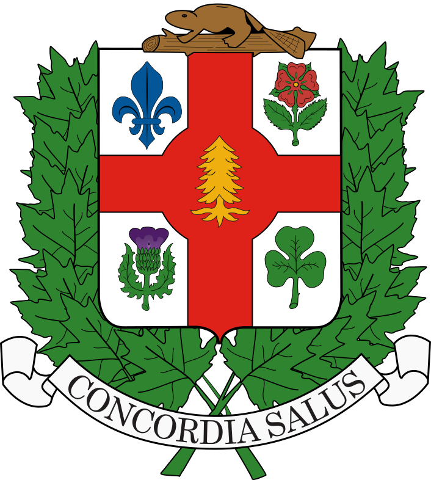
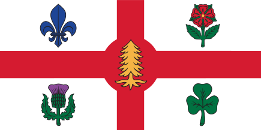
Montreal
Guide. Places in this edition: 37.
Историческая справка
Монреаль — крупнейший город провинции Квебек, франкоязычный центр Северной Америки.
Основан как Вилль-Мари на острове у слияния Оттавы и Святого Лаврентия; британский период и волны иммиграции создали двуязычный мегаполис. Подземный город, фестивали и старый порт отражают суровый климат и креативную экономику.
Atwater Market
Marché Atwater
Address: 138 Atwater Avenue, Saint-Henri | Style: Streamline moderne public market | Period: 1933 art déco market hall near Lachine Canal
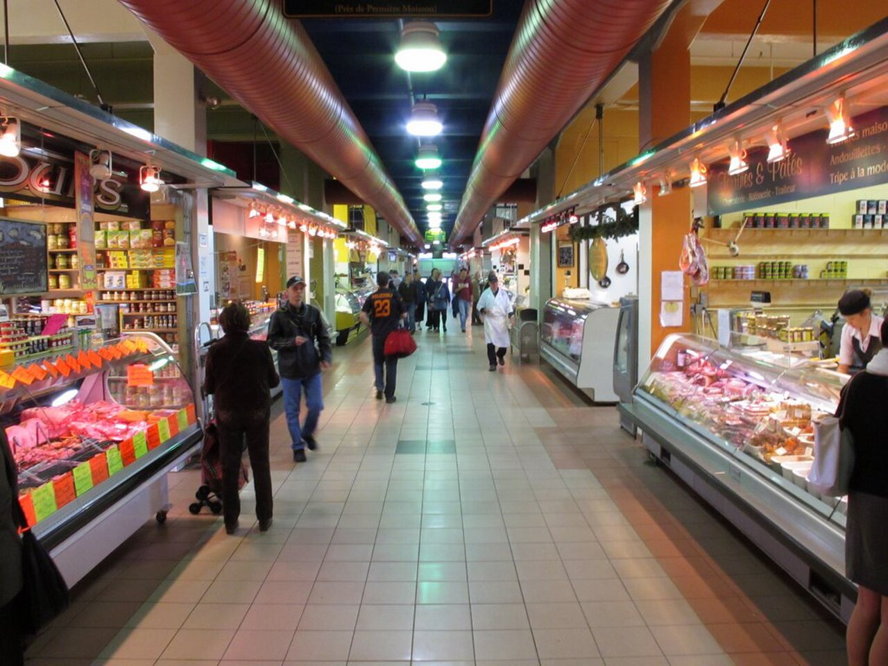
Indoor cheese and produce with summer terraces facing canal bike path revitalization.
Facts and details
Named for Edwin Atwater, municipal father.
Canal-side gentrification Loft district walks start here.
History
Industrial worker neighborhood market survived deindustrialization through foodie tourism.
Significance
West-end rival to Jean-Talon's ethnic scale.
Biosphere Environment Museum
Biosphère de Montréal
Address: 160 Tour de Ville, Île Sainte-Hélène, Parc Jean-Drapeau | Style: Buckminster Fuller geodesic dome on mast ring | Period: U.S. Pavilion Expo 67; museum conversion 1995
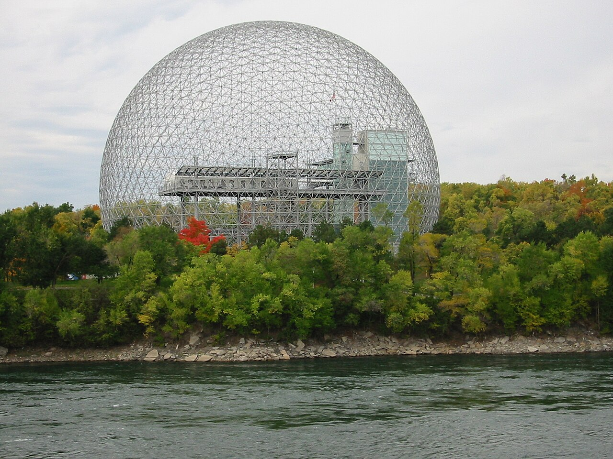
Environment-focused exhibitions on water, climate, and Great Lakes ecology inside the acrylic cells.
Facts and details
Fire damaged the skin in 1976; newer membranes reinterpret Fuller's intent.
Operates under Environment and Climate Change Canada direction.
History
United States fair presence became a rare intact Fuller dome in public use.
Significance
Expo 67 icon repurposed for sustainability storytelling.
Bonsecours Market
Marché Bonsecours
Address: 350 Saint Paul Street East, Old Montreal | Style: Tetrastyle portico silver dome public building | Period: 1844–1847 neo-Classical market hall
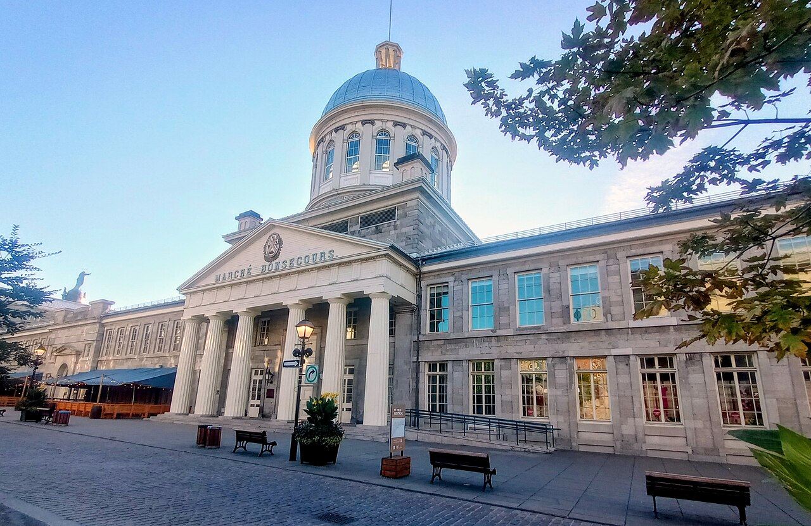
Tourist crafts and exhibition rentals replaced wholesale meat; the dome still punctuates skyline walks.
Facts and details
Briefly housed city hall and Exhibition-era party events.
Named for adjacent Notre-Dame-de-Bon-Secours chapel sailors favored.
History
Canal-era provisioning hub became heritage shell for culture industries.
Significance
Silver cupola instantly reads as Old Montreal postcard.
Premier summer tennis on STM-reachable neighbourhood park land.
Jacques Cartier Bridge
Pont Jacques-Cartier
Address: St. Lawrence linking Montreal Island to Longueuil | Style: Cantilever through-truss with elegant curve | Period: 1929–1930 steel truss; illumination 2017
Traffic sometimes closes for fireworks competition weekends.
Named for French navigator, distinct from Cartier Bridge in other cities.
History
Automobile boom required new south shore link before Jacques-Cartier tunnel choke.
Significance
The glowing spine of summer nights above the fleuve.
Jean-Talon Market
Marché Jean-Talon
Address: 7070 Henri-Julien Avenue, Little Italy | Style: Public market halls and seasonal canopy stalls | Period: 1933 art déco market buildings; open-air sheds expanded
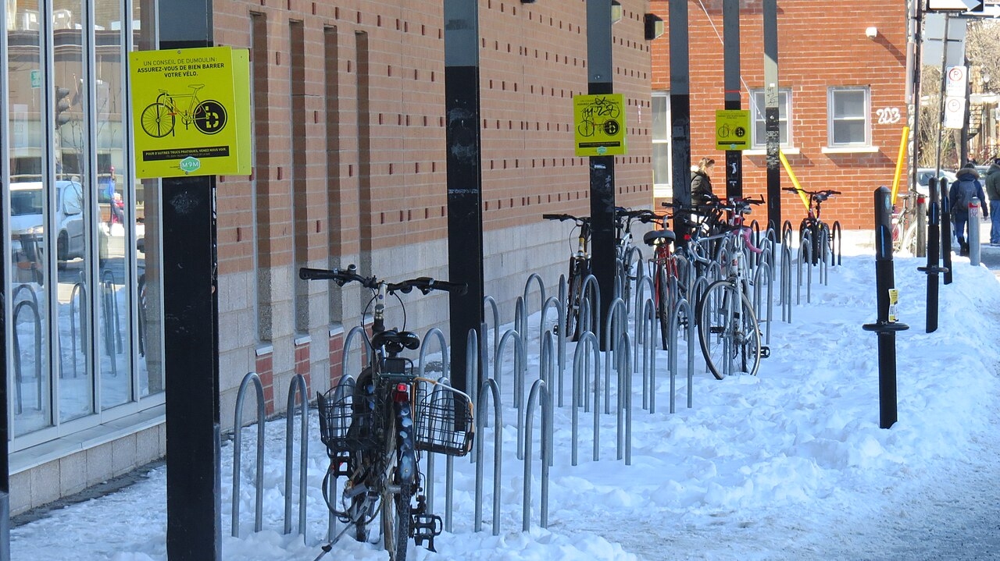
Quebec produce, cheese makers, florists, and fishmongers draw cooks from across the island.
Facts and details
Named for New France intendant Jean Talon.
Metro Jean-Talon connects blue and orange lines underground.
History
Agricultural wharf markets moved inland with rail and Italian immigrant vendor culture.
Significance
Busiest public food market in North America by many counts.
Jeanne-Mance Park
Parc Jeanne-Mance
Address: Between Mount Royal Avenue and Duluth, eastern flank of Mount Royal Park | Style: Olmsted-linked urban meadows | Period: 1878 park naming; sports fields modernized
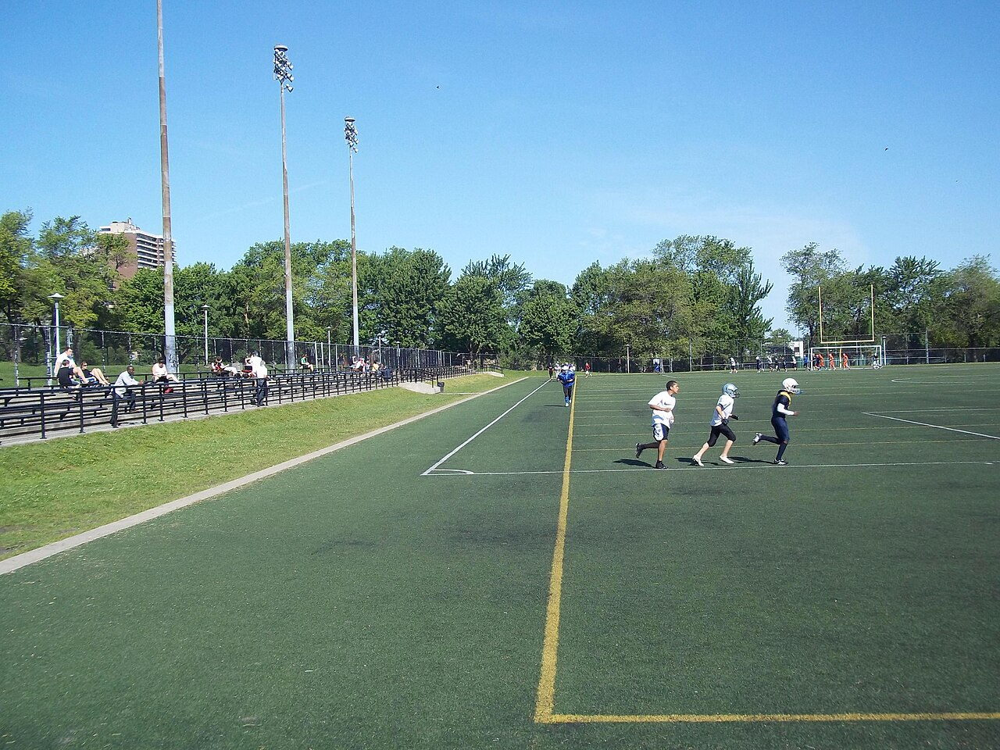
Frisbee, softball, and winter tubing hills face downtown towers above the treeline.
Facts and details
Honors cofounder of Hôtel-Dieu hospital and colonial educator.
Separates student Plateau streets from mountain forest trails.
History
Buffer zone saving park edge from row-house creep upward.
Significance
Neighborhood lung between Plateau residents and the mountain.
La Fontaine Park
Parc La Fontaine
Address: Roy Street East between Sherbrooke and Mont-Royal, Plateau | Style: English picturesque lake and open-air theatre | Period: 1908 park layout on former military drills
Rowboats in summer, cross-country ski loops in winter; Théâtre de Verdure hosts francophone shows.
Facts and details
Named for Louis-Hippolyte La Fontaine, reform politician.
Lake fed once by city aqueduct experiments.
History
Military grounds became hygiene reform playground for crowded tenement wards.
Significance
Plateau democratic backyard bigger than British royal parks nearby.
McCord Stewart Museum
Musée McCord
Address: 690 Sherbrooke Street West, McGill ghetto edge | Style: Neoclassical museum facade; contemporary glass bridge | Period: 1921 David McCord gift building; Stewart wing 2013
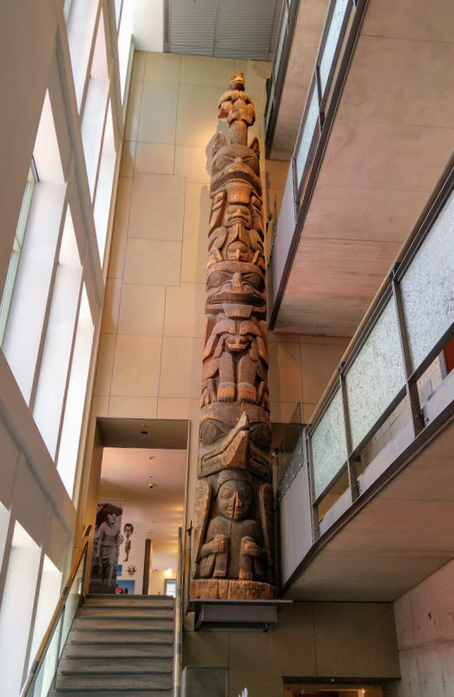
McCord Stewart stitches Anglophone documentary photography with Indigenous collections partnerships.
Facts and details
William Notman photographic archive anchors 19th-century visual history.
Stewart costume and decorative arts collections merged 2021 naming.
History
Philanthropic accumulation of Montreal material culture turned public institution.
Significance
Critical English-Montreal story told beside francophone national museums.
McGill University
Campus du centre-ville
Address: 845 Sherbrooke Street West, downtown university precinct | Style: Neoclassical core, eclectic 19th–20th c. wings | Period: 1821 charter; Arts building 1839–1843 onward
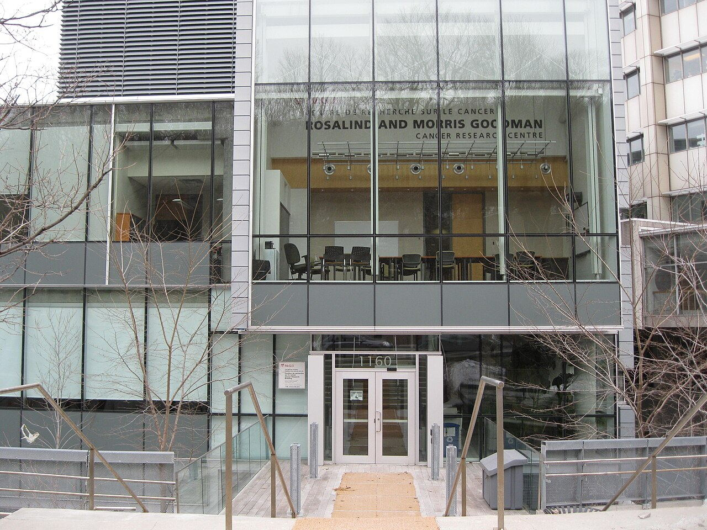
McCord Museum neighbors Roddick Gates; geese haunt Lower Field toward the mountain.
Facts and details
James McGill's estate bequest seeded the Anglican institution.
Research hospital network partners with French-language université networks citywide.
History
Scottish merchant philanthropy met colonial middle-class education demand.
Significance
English Canada's research flagship pressed against French-speaking civic life.
Address: 4101 Sherbrooke Street East, Maisonneuve | Style: Thematic gardens and conservatory modernism | Period: 1931 founding; pavilions and Chinese garden later
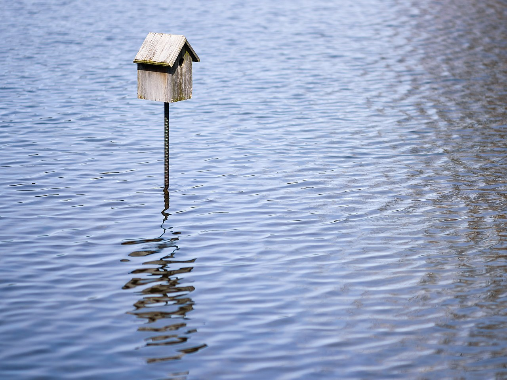
Thirty outdoor gardens plus insectarium next door on the same metro stop.
Facts and details
Sister institution with Université de Montréal plant research.
First Nations garden and Japanese pavilion deepen interpretation.
History
Depression-era civic beautification survived near Olympic stadium shadow.
Significance
One of the world's great temperate botanical collections.
Montreal City Hall
Hôtel de Ville de Montréal
Address: 275 Notre-Dame Street East, Old Montreal | Style: Second Empire baroque revival (Perrault brothers) | Period: 1872–1878; rebuilt after 1922 arson
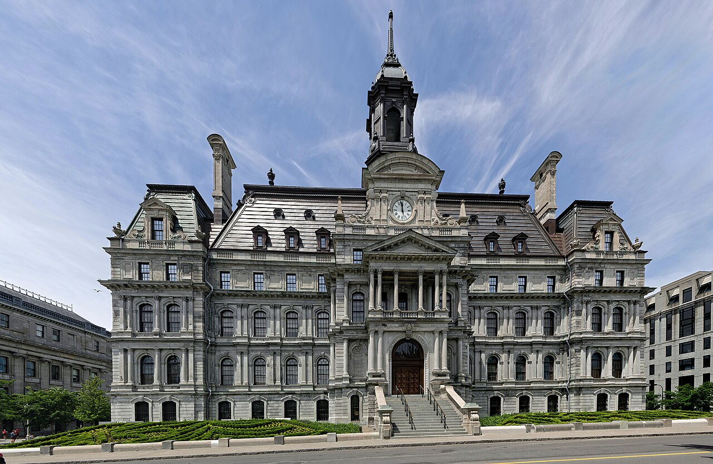
Copper mansard roof and ceremonial balcony where De Gaulle shouted Vive le Québec libre in 1967.
Facts and details
Interior marriage halls and council chamber can be toured by appointment.
Fronts Place Jacques-Cartier with symmetrical pavilions.
History
Victorian francophone civic pride rebuilt in stone after the great fire.
Significance
Seat of North America's largest French-speaking municipality.
Montreal Clock Tower
Tour de l'horloge, Vieux-Port
Address: Old Port quay near Quai de l'Horloge | Style: Imperial memorial lighthouse tower | Period: 1919–1922 Beaux-Arts maritime memorial
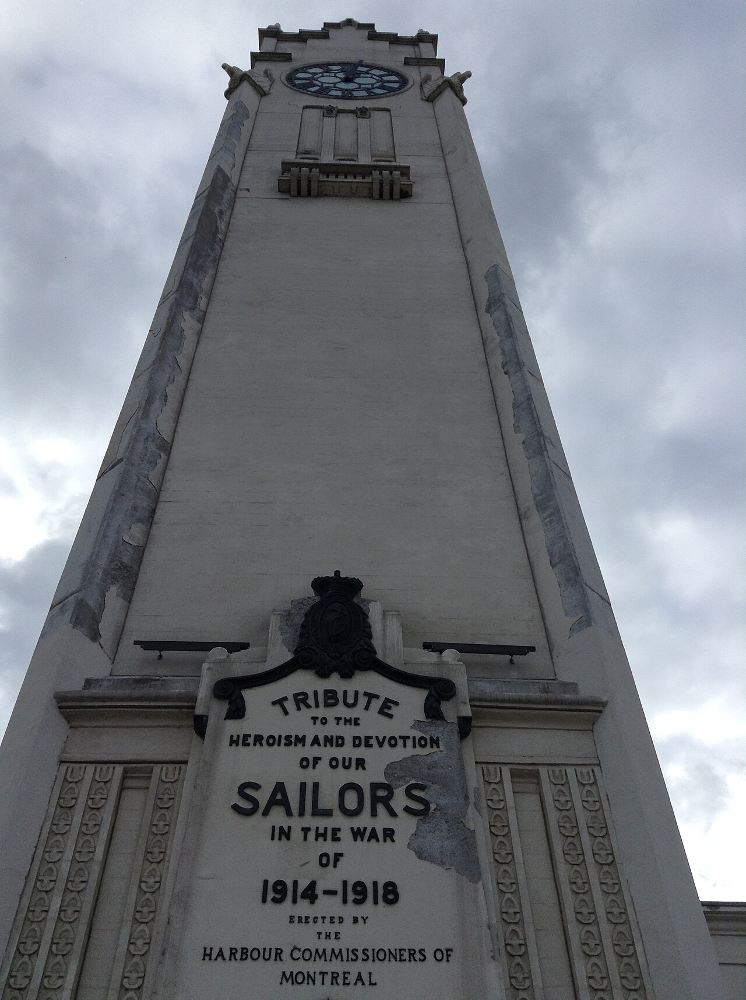
Climb seasonally for river-trade views; sailors' memorial plaques at the base.
Facts and details
Commemorates merchant mariners lost in the First World War.
Still signals with Beaux-Arts lantern though navigation is electronic.
History
Harbour commission beautified working waterfront before containerization moved cargo.
Significance
Vertical counterpoint to flat quays and Ferris wheel.
Montreal Insectarium
Insectarium
Address: 4581 Sherbrooke Street East, Espace pour la vie | Style: Biophilic pavilion stressing insect empathy | Period: 1990 original; renewal architecture 2021–2022 reimagining
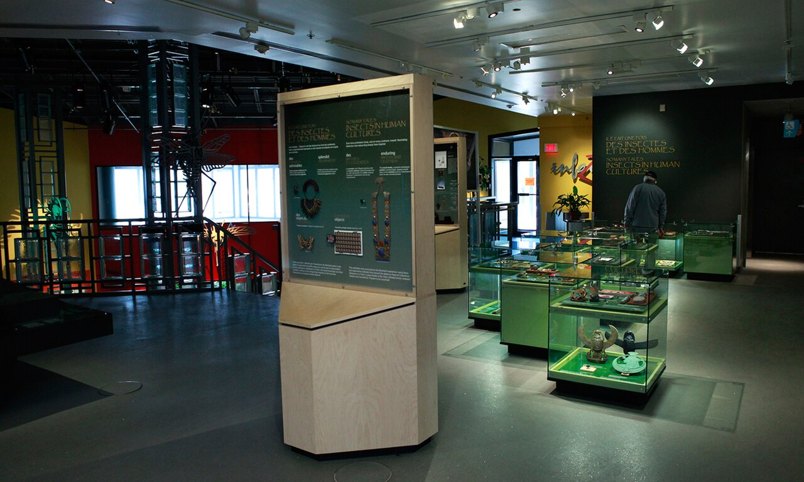
Live colonies, pinned taxonomy walls, and citizen science programs promote arthropod literacy.
Facts and details
Moved closer to botanical garden metro spine after redesign.
Butterfly emergence chamber remains a child highlight.
History
Pioneer institution grew from entomologist Georges Brossard evangelism.
Significance
Rare standalone insect museum in North America.
Montreal Museum of Fine Arts
Musée des beaux-arts de Montréal
Address: 1380 Sherbrooke Street West, Golden Square Mile | Style: Beaux-Arts through contemporary limestone glass | Period: 1912 Beaux-Arts wing; Dessaules pavilions 1991; Claire and Marc Bourgie 2011
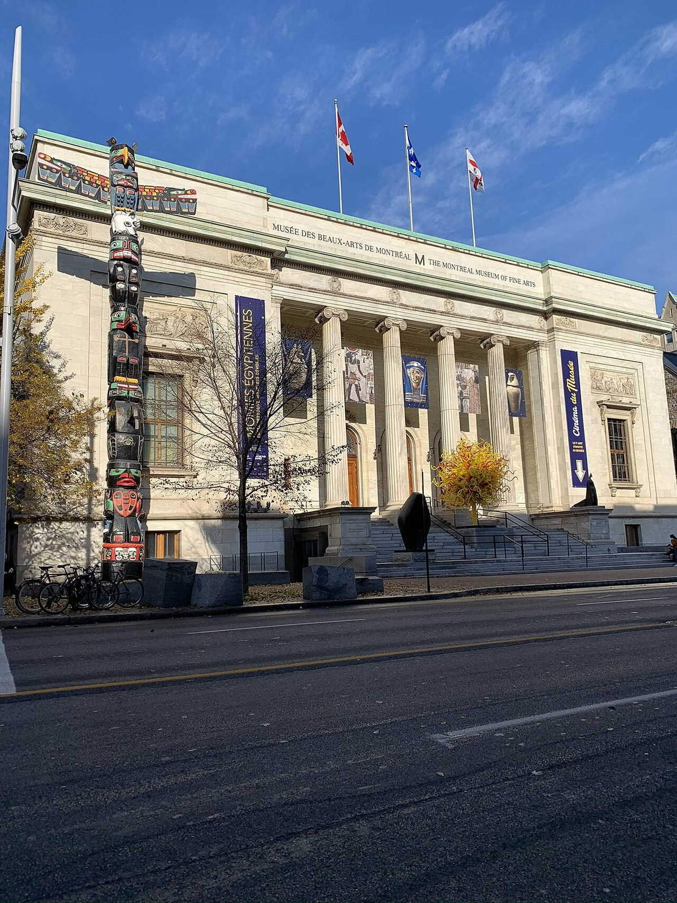
World cultures, Canadian masters, decorative arts, and Rodin bronzes span linked pavilions.
Facts and details
William B. Angus gift seeded the encyclopedic collections.
Underground passage connects to Concordia EV building for students.
History
Anglophone merchant millionaires donated mansions and paintings atop the escarpment.
Significance
Montreal's flagship art museum on the Main divide's wealthy slope.
Mount Royal Chalet
Chalet du Mont-Royal
Address: 1196 Camillien-Houde Way, Mount Royal Park summit | Style: Rustic log-and-stone civic chalet (Aristide Beaugrand-Champagne) | Period: 1931–1932 civic mountain lodge
Terrace views sweep from downtown to St. Lawrence; snack bar and seasonal events draw tour buses and hikers.
Facts and details
Built during unemployment-relief programs between the wars.
Often paired in photos with the downtown skyline after dark.
History
City Beautiful ideals capped Olmsted's summit clearings with public hospitality space.
Significance
Social heart of the mountain beside the Kondiaronk lookout path network.
Mount Royal lookout
Belvédère du Mont-Royal
Address: Belvédère Kondiaronk, Mount Royal Park | Style: Picturesque landscape belvedere | Period: Olmsted park 1876; lookout improvements 20th c.
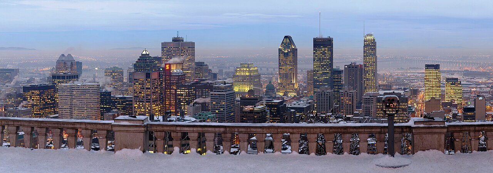
Picnic crowds and buskers gather above the downtown forest bowl; winter cross-country trails start nearby.
Facts and details
Frederick Law Olmsted planned the summit reserve McGill helped protect.
Montreal takes its name from the French mont royal visible from the river.
History
Civic romanticism preserved a bald summit while suburbs climbed flanks under later debates.
Significance
The obligatory panorama for understanding Montreal geography.
Notre Dame des Neiges Cemetery
Cimetière Notre-Dame-des-Neiges
Address: 4601 Côte-des-Neiges Road, Mount Royal slopes | Style: Garden cemetery monuments across escarpment | Period: 1854 Catholic necropolis expansion
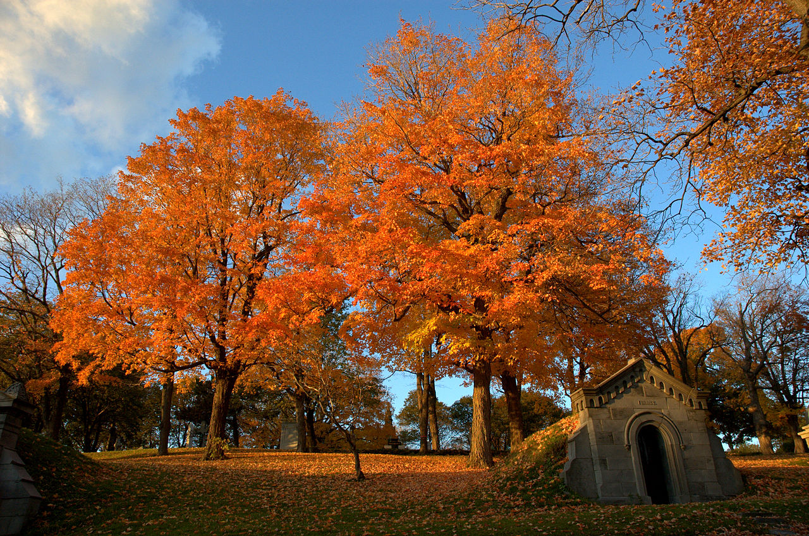
One million interments in tree-lined sections; winter funerals demand snow crews.
Facts and details
Quebec cultural figures from hockey to politics rest here.
Adjacent Protestant Mount Royal Cemetery predates and partners for sightlines.
Francophone spiritual geography mirrored in stone memorial typography.
Notre-Dame Basilica of Montreal
Basilique Notre-Dame de Montréal
Address: 110 Notre-Dame Street West, Old Montreal | Style: Gothic Revival (James O'Donnell); interior wood carving | Period: 1824–1829 church; neo-Gothic interior by 1880s
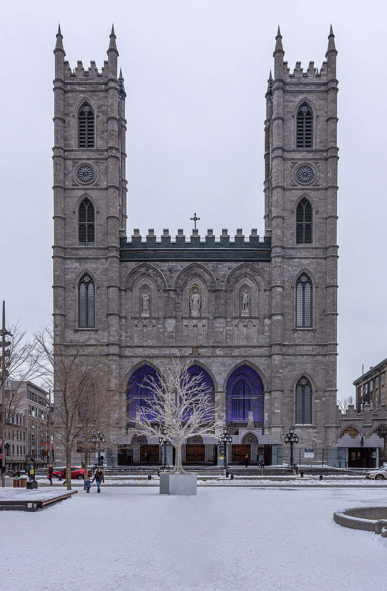
Azure vault, starry ceiling, and altarpiece astonish visitors; Céline Dion wedding made global headlines.
Facts and details
O'Donnell converted to Catholicism before death and is buried in the crypt.
Aura sound-and-light shows run on a separate ticket many evenings.
History
Protestant city fathers eventually welcomed Irish Catholic migration; the basilica became a national historic site.
Significance
The most visited ecclesiastical interior in North America for many years.
Notre-Dame-des-Neiges (chapel entrance)
Cimetière montagne
Address: Cemetery main drive, Côte-des-Neiges | Style: Concrete sanctuary and columbarium complex | Period: Resurrection chapel complex, mid-20th century
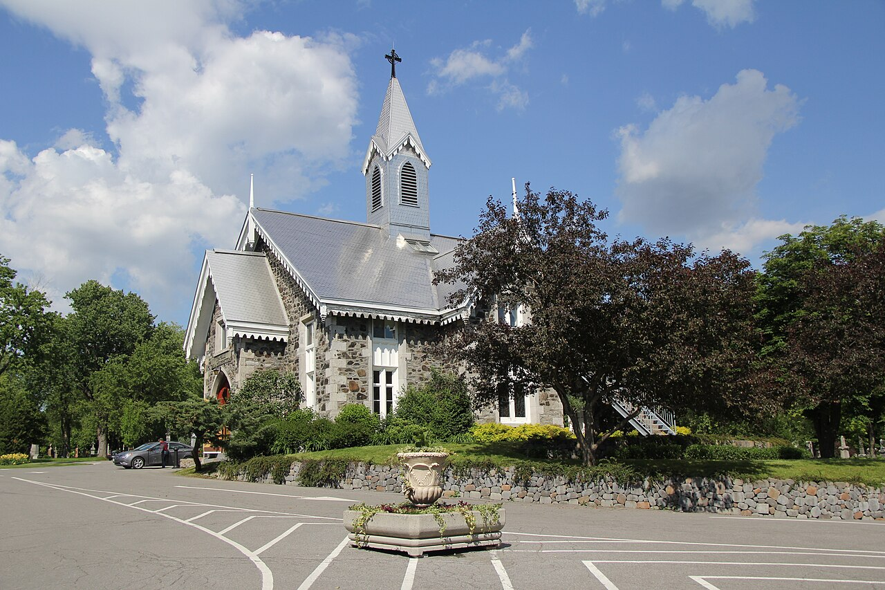
Funeral liturgy hub for Canada's largest Catholic cemetery; winter heating bays comfort mourners.
Facts and details
Heated roads and chapels battle northern freeze-thaw burial logistics.
Sits upslope with views toward downtown steel.
History
Postwar liturgical reform simplified ornament while processing volume exploded.
Significance
Threshold architecture between city grid and necropolis lawn.
Old Port of Montreal
Vieux-Port de Montréal
Address: St. Lawrence waterfront, Old Montreal | Style: Historic quays, contemporary promenades and pavilions | Period: Port activity from New France; redevelopment from 1990s
Cycling paths, the Montréal observation wheel, winter skating, and ferries frame views of Habitat 67.
Facts and details
Jacques Cartier landed nearby in 1535 at the indigenous village of Hochelaga.
Canada Steamship Lines warehouses once lined these wharves.
History
Shipping moved downstream to modern terminals; heritage tourism reclaimed the stone embankment.
Significance
Waterfront hinge between convention towers and colonial street grid.
Guided tours of vestiges, intermittent sports and concerts; inclined tower observation reopened in phases.
Facts and details
1976 Summer Games left massive municipal debt and leaky fabric roof sag.
The Expos moved out; MLS soccer explored reuse more than once.
History
Mayor Drapeau's mega-project reshaped east-end industrial lots into a global stage.
Significance
Love-it-or-fix-it symbol of Olympic ambition and maintenance reality.
Parc Jean-Drapeau
Îles de Sainte-Hélène et Notre-Dame
Address: Île Sainte-Hélène and Île Notre-Dame, St. Lawrence | Style: Landscape park, F1 circuit, aquatic complexes | Period: Parks from 1870s; enlarged for Expo 67
Osheaga, F1 Canadian Grand Prix, beach at Jean-Doré, and winter cross-country share the islands.
Facts and details
Artificial Notre Dame island built from Metro tunnel spoil.
Lawrence pond site of rowing and beach volleyball in warmer months.
History
Industrial and fairground uses yielded weekend ecology labs and event venue cash flow.
Significance
Montreal's festival island escape minutes from downtown.
Place Jacques-Cartier
Vieux-Montréal
Address: Old Montreal pedestrian spine toward the river | Style: French colonial grid plaza with Nelson column 1809 | Period: 1804 square; market hall now elsewhere
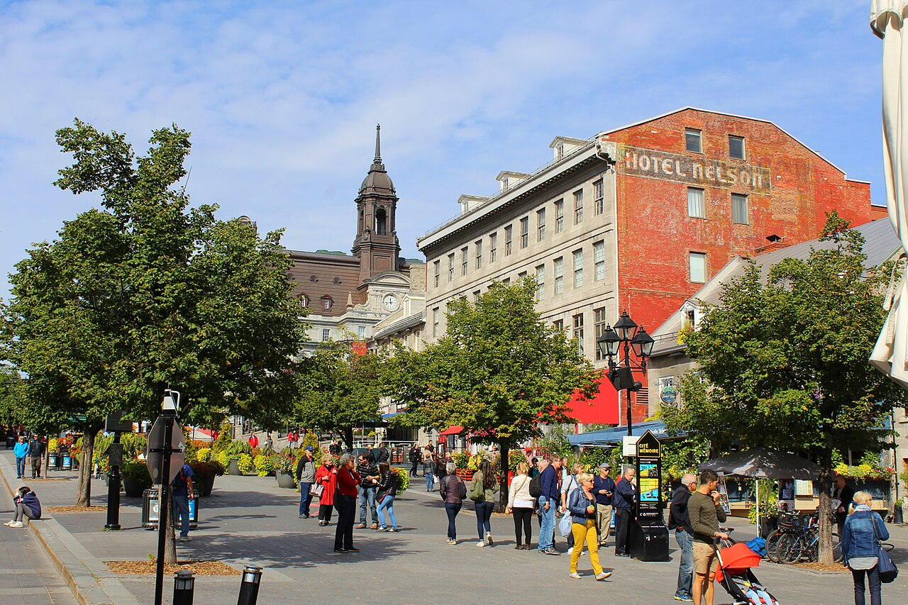
Terraces, street performers, and calèches converge; terraces spill from 19th-century bank buildings.
Facts and details
Nelson's Column predates Trafalgar Square's pillar as imperial trophy.
Renamed after cartographer Jacques Cartier in 1847.
History
Public punishment site became genteel promenade as port wealth dressed stone façades.
Significance
Social theater between city hall, river cruise docks, and tourist retail.
Place des Arts
Quartier des spectacles
Address: 175 Sainte-Catherine Street West, Quartier des spectacles | Style: International Style cultural complex; plaza festivals | Period: 1963 cultural center; Salle Wilfrid-Pelletier etc.
OSM, Opéra de Montréal, jazz festival stages, and Franco book fair tents occupy the superblock.
Facts and details
Underground malls tie to metro and new concert hall across street.
LED façades on neighboring towers sync during Nuit blanche.
History
Jean Drapeau modernism clustered high culture to rival other Canadian metropolises.
Significance
Winter and summer performing-arts generator for francophone creation.
Pointe-à-Callière Museum
Musée Pointe-à-Callière
Address: 350 Place Royale, Old Montreal | Style: Subterranean galleries beneath Place Royale | Period: 1992 archaeology museum; underground crypt expansions
Excavated foundations of Fort Ville-Marie; multimedia birth-of-Montreal narrative for schools.
Facts and details
Built where Samuel de Champlain planted 1642 settlement.
Collects urban archaeology as the city digs metro and condo foundations.
History
Anniversary politics of 1992 turned preservation into flagship interpretation center.
Significance
Ground-zero museum for colonial myth and critique under cobbles.
Rio Tinto Alcan Planetarium
Planétarium
Address: 4801 Pierre-de Coubertin Avenue, Espace pour la vie campus | Style: Sustainable showcase with domed theaters (Cardin Julien et al.) | Period: 2013 starchitect planetarium pair of cones
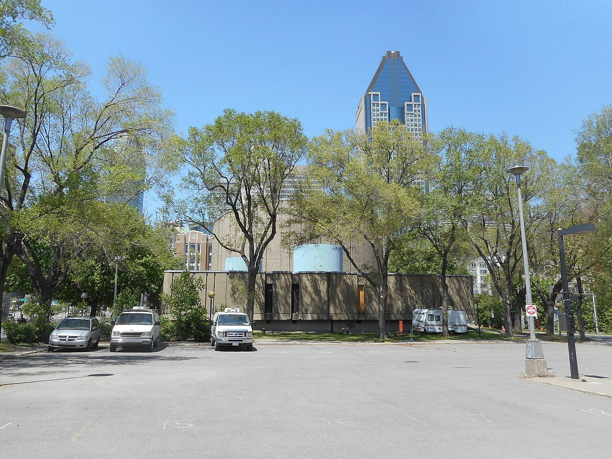
Dual domes frame astronomical shows beside Olympic velodrome shell that houses the Biodôme.
Facts and details
Part of Space for Life cluster with botanic garden and insectarium.
LEED-NC certification stressed energy recovery.
History
Old Dow planetarium handoff to modern immersion projectors.
Significance
Family astronomy anchor east of downtown.
Rue Saint-Paul
Vieux-Montréal
Address: Rue Saint-Paul, Old Montreal spine | Style: Limestone mercantile streetscape | Period: Colonial trace; stone warehouses 18th–19th c.
Galleries, hotels, and restaurant patios thread between Place d'Youville and Bonsecours.
Facts and details
Oldest paved commercial axis still reads medieval widths in places.
Named after Paul de Chomedey, Maisonneuve companion.
History
Fur trade counting houses became loft boutiques after port decline.
Significance
Pedestrian humidity of Old Montreal condensed into one stroll.
Saint Joseph's Oratory
Oratoire Saint-Joseph
Address: 3800 Queen Mary Road, Côte-des-Neiges | Style: Italian Renaissance revival domes on escarpment | Period: Small chapel 1904; basilica completed 1967
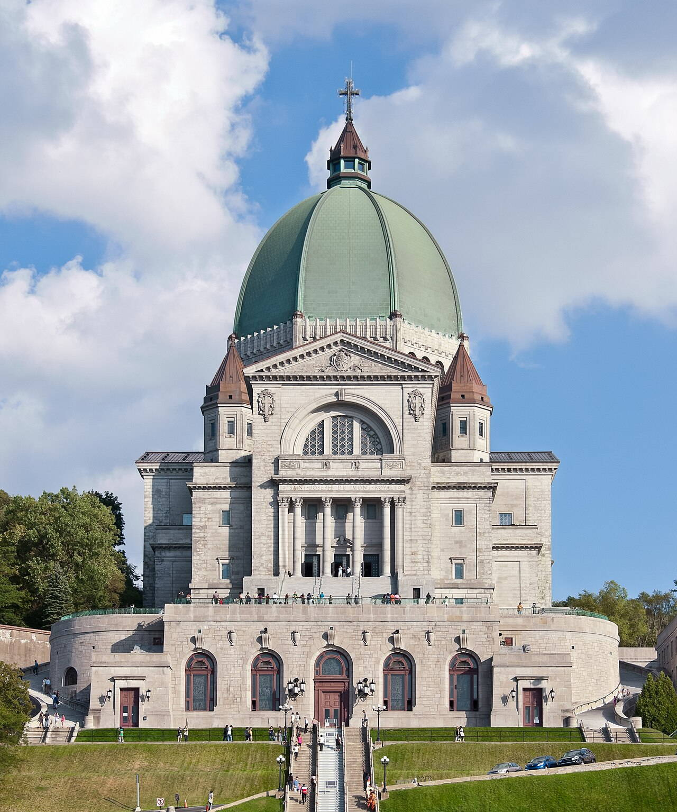
Votive steps, Brother André tomb lines, and city-wide copper dome views reward steep approaches.
Facts and details
Largest church dome in Canada by interior volume tradition.
Pilgrims leave crutches as ex-votos in side chapels.
History
Saint André Bessette's healing cult grew a hillside campus of hospitality buildings.
Significance
Quebec spirituality landmark visible from airliners on clear days.
Timber hammer-beam roof, stained glass, and Stations carved by Irish immigrants' donations.
Facts and details
Served Famine-era Irish laborers building Victoria Bridge.
Declared national historic site for bilingual congregational continuity.
History
Loyalties to Rome and Dublin intertwined in cholera and railway boom years.
Significance
English Catholic counter-story to francophone parish geography.
Square Saint-Louis
Le Plateau-Mont-Royal
Address: Between Saint Louis Square Street and Laval, Plateau | Style: French Second Empire picturesque plaza | Period: Victorian square 1876; Victorian row houses ring
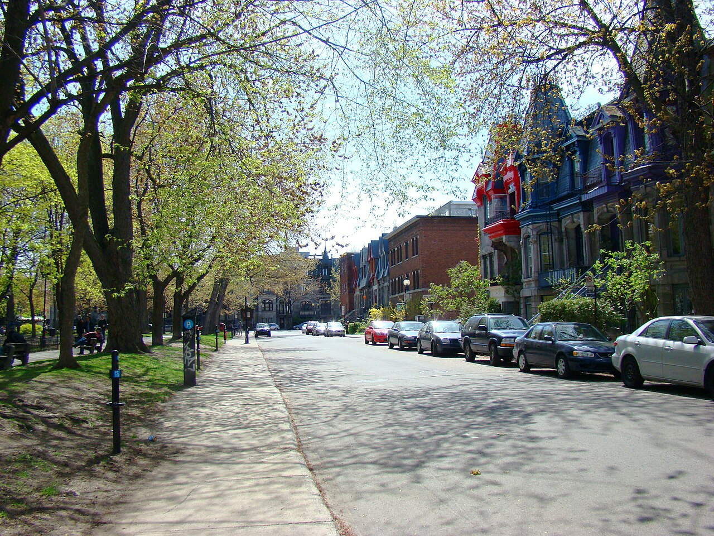
Fountain, tennis court scale lawn, and colorful façades appear on every Montreal rom-com poster.
Facts and details
Former cholera cemetery land turned genteel speculative housing.
Émile Nelligan's childhood home overlooks benches.
History
Francophone bourgeoisie showcase block near Saint-Denis café axis.
Thirty-plus kilometers link metro, malls, offices, and universities—winter survival infrastructure.
Facts and details
Operated by multiple private owners with imperfect wayfinding signage.
Expands with each new tower podium plate.
History
Hotel tunnel experiments became a commercial response to sub-zero wind chill.
Significance
Defines Montreal workday circulation distinct from sunbelt downtowns.
Île Sainte-Hélène
Parc Jean-Drapeau
Address: Île Sainte-Hélène, Parc Jean-Drapeau | Style: Island park with British fort ruins and fair relics | Period: Natural widening; fortifications; Expo 67 makeover
Picnic lawns overlook Jacques-Cartier Bridge; Stewart Museum interprets garrison history.
Facts and details
La Ronde amusement park leases provincial fairground footprint.
Named for navigator's mother, not the British nurse famous elsewhere.
History
Military redoubt became world's fair playground then electro youth culture.
Significance
Green punctuation in mid-river separating city from South Shore.